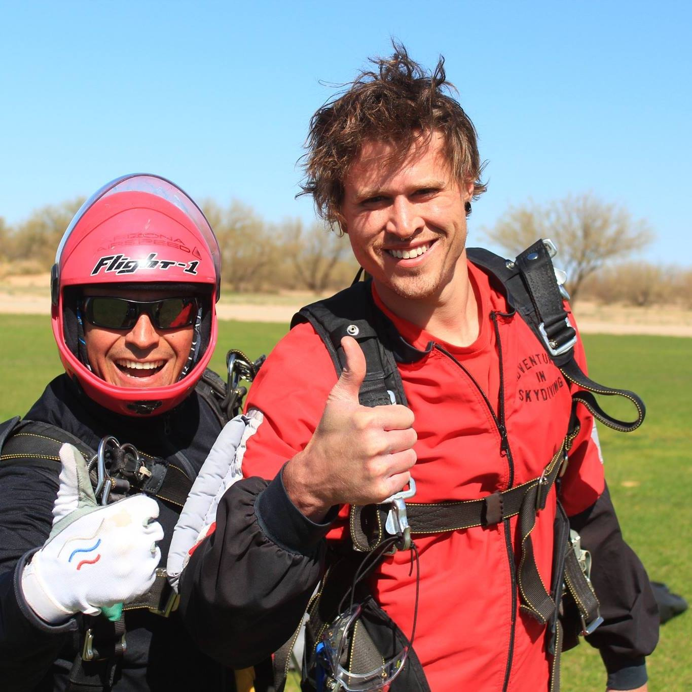

About Me

Born and raised in Atlanta, Georgia I attended St. Pius X Catholic High School and then chose to study Engineering in college, with my two top choices being Georgia Institute of Technology, which both my parents are graduates from, or the United States Merchant Marine Academy, one of the five federal service academies. After visiting the campus and spending a weekend in New York, the Academy is on Long Island, I chose the latter. After spending four years at the academy, of which one year was spent at see working as a cadet on merchant ships, I graduated with a Bachelor's of Science in Marine Engineering Systems, and a commission in the Naval Reserve.
Following graduation I spent a few months at home and then began my job working for the U.S. Navy's Military Sealift Command, a government company whose mission is to support the U.S. Navy vessels throughout the world, we deployed with all their strike groups and assist them by delivering their food, fuel, ammunition, and mail via Underway Replenishments. I spent over six years working as an engineer on seven different ships in the fleet. On a ship underway you don't have the luxury of calling for a repairman if anything goes wrong, be it HVAC, electrical, plumbing, appliance related… anything. That is what the engineers are there for. (In addition to maintaining all of the engine room systems that are required to actually propel the vessel through the water as well as those to maintain electrical power and the cargo equipment for the mission). As an engineer, I had to do it all… or be able to learn to do it all in a short amount of time, which is what I love to do… learn something new, and then become the best possible at it.
After over six years of always being away from land (on average in a year I would be home for maybe a month or two), I decided that I had enough of that lifestyle and being away from it all and in isolation, so I decided to change gears and look for a job that keeps me on land. That being said, I am still in the process of finding a job currently, shifting from a seagoing job and lifestyle and fitting it into one particular shoreside job isn't quite as easy as one would expect, especially in Atlanta where the nearest coastline is hours away. So I decided to expand my knowledge into another area of my passions, technology and computers… and enrolled in the Georgia Tech Coding Bootcamp in order to help me get a jump start on my coding skills.
My other passions include motorcycling (I currently own a 2013 Ninja 300 and it is my daily vehicle), Rubik's cubes (I have quite a few of them to say the lease ranging from 2x2x2s up to a 15x15x15 as well as all sizes of -minxs), reading, and meditation.